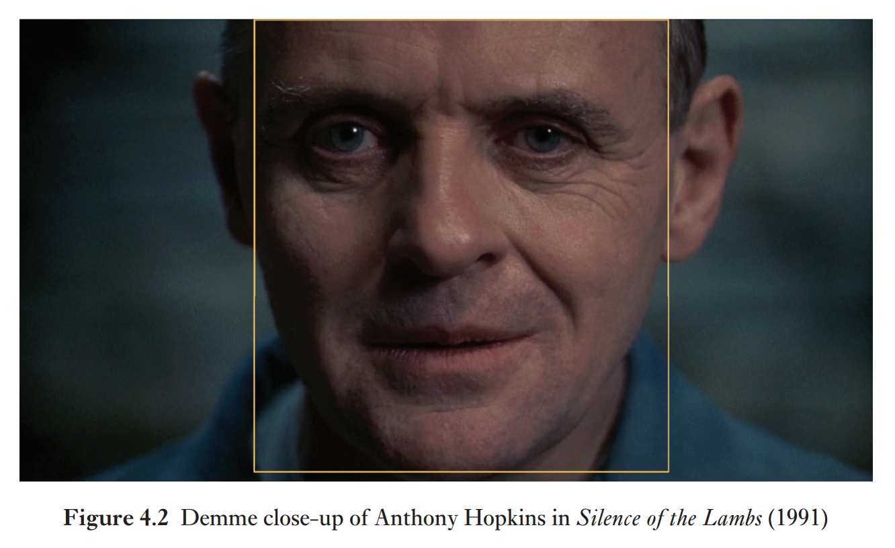
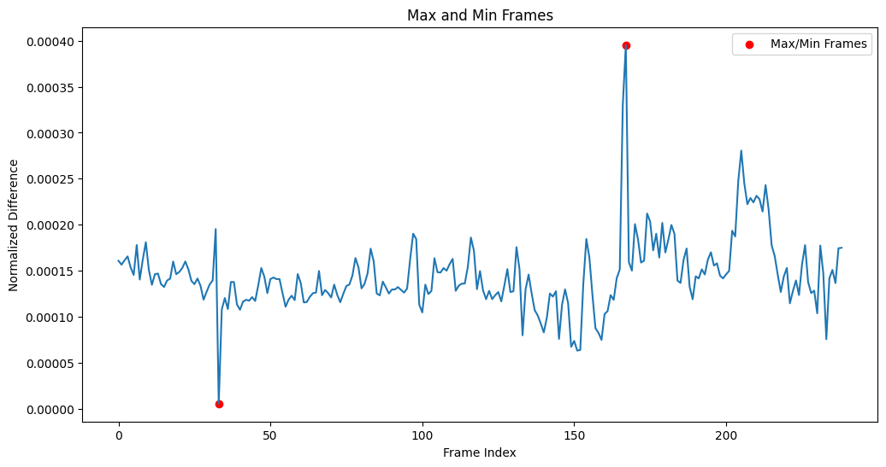
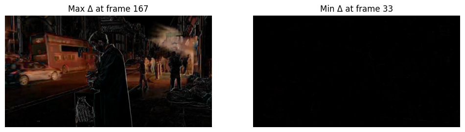

<!DOCTYPE html>
<html lang="en">
  <head>
    <meta charset="utf-8" />
    <meta name="viewport" content="width=device-width, initial-scale=1.0, maximum-scale=1.0, user-scalable=no" />

    <title>Counting the Invisible</title>
    <link rel="stylesheet" href="dist/reveal.css" />
    <link rel="stylesheet" href="dist/theme/black.css" id="theme" />
    <link rel="stylesheet" href="plugin/highlight/zenburn.css" />
	<link rel="stylesheet" href="css/layout.css" />
	<link rel="stylesheet" href="plugin/customcontrols/style.css">
	<link rel="stylesheet" href="plugin/chalkboard/style.css">

	<link rel="stylesheet" href="plugin/reveal-pointer/pointer.css" />


    <script defer src="dist/fontawesome/all.min.js"></script>

	<script type="text/javascript">
		var forgetPop = true;
		function onPopState(event) {
			if(forgetPop){
				forgetPop = false;
			} else {
				parent.postMessage(event.target.location.href, "app://obsidian.md");
			}
        }
		window.onpopstate = onPopState;
		window.onmessage = event => {
			if(event.data == "reload"){
				window.document.location.reload();
			}
			forgetPop = true;
		}

		function fitElements(){
			const itemsToFit = document.getElementsByClassName('fitText');
			for (const item in itemsToFit) {
				if (Object.hasOwnProperty.call(itemsToFit, item)) {
					var element = itemsToFit[item];
					fitElement(element,1, 1000);
					element.classList.remove('fitText');
				}
			}
		}

		function fitElement(element, start, end){

			let size = (end + start) / 2;
			element.style.fontSize = `${size}px`;

			if(Math.abs(start - end) < 1){
				while(element.scrollHeight > element.offsetHeight){
					size--;
					element.style.fontSize = `${size}px`;
				}
				return;
			}

			if(element.scrollHeight > element.offsetHeight){
				fitElement(element, start, size);
			} else {
				fitElement(element, size, end);
			}		
		}


		document.onreadystatechange = () => {
			fitElements();
			if (document.readyState === 'complete') {
				if (window.location.href.indexOf("?export") != -1){
					parent.postMessage(event.target.location.href, "app://obsidian.md");
				}
				if (window.location.href.indexOf("print-pdf") != -1){
					let stateCheck = setInterval(() => {
						clearInterval(stateCheck);
						window.print();
					}, 250);
				}
			}
	};


        </script>
  </head>
  <body>
    <div class="reveal">
      <div class="slides"><section  data-markdown><script type="text/template"><!-- .slide: class="drop" -->
<div class="" style="position: absolute; left: 0px; top: 0px; height: 1200px; width: 1920px; min-height: 1200px; display: flex; flex-direction: column; align-items: center; justify-content: center" absolute="true">

<section data-background-transition="zoom" data-background-video="https://github.com/chavezheras/slides/raw/main/assets/machine_vision_BG.mp4"
          data-background-video-loop data-background-video-muted data-background-opacity=.2>
</section>

# Counting the Invisible
## The emergence of datamatic time


[Dr Daniel Chávez Heras](https://movingpixel.net/)

[movingpixel.net ](https://movingpixel.net/) | [@chavezheras@sigmoid.social](https://sigmoid.social/@chavezheras)

King's College London, December 2023
</div>

<aside class="notes"><p>Thank you to Joanna for the invitation and introduction.
And to the centre for attention studies for hosting us this evening.
I am delighted to be here.</p>
</aside></script></section><section  data-markdown><script type="text/template"><!-- .slide: class="drop" -->
<div class="" style="position: absolute; left: 0px; top: 0px; height: 1200px; width: 1920px; min-height: 1200px; display: flex; flex-direction: column; align-items: center; justify-content: center" absolute="true">

<section data-background-transition="zoom" data-background-video="https://github.com/chavezheras/slides/raw/main/assets/machine_vision_BG.mp4"
          data-background-video-loop data-background-video-muted>
</div>

<aside class="notes"><p><em>Can machines see?</em>
I would say no; they cannot.</p>
<p>At the same time, we see through machines all the time. Machines allowed us to see the world around us in ways that our senses alone cannot.
In this way, human vision is embedded in machines, and machine vision in turn reshapes what we can see and how, expanding our visual faculties in one direction by contracting it in another.</p>
<p>I don&#39;t think is controversial for this audience to say that our worldviews are technically mediated, and they have been for a very long time. Philosophy, and especially aesthetics, has been keenly aware of this for at least a couple of centuries.
Computer vision is part of this longer history of technical reshaping of the visual. From painting to photography to cinema.</p>
<p>To understand how machines are said to see on our behalf, it makes sense to explore machine vision through the lens of technologies of vision, the kinds of images these technologies afford, and the audiences these images create.</p>
<p>At the same time, this emphasis on technical practice helps us to critically intervene in the design and redesign of machine vision, and to enter into more meaningful collaborations with disciplines in science and engineering.</p>
<p>This is, in a nutshell, the topic of my forthcoming book about <em>Cinema and Machine Vision</em></p>
</section></aside></script></section><section  data-markdown><script type="text/template"><!-- .slide: class="drop" -->
<div class="" style="position: absolute; left: 0px; top: 0px; height: 1200px; width: 1920px; min-height: 1200px; display: flex; flex-direction: column; align-items: center; justify-content: center" absolute="true">


</div>

<aside class="notes"><p>In my book I focus on moving images: artefacts in and of motion that structure cognitive and affective responses in their audiences.</p>
<p>In this talk I will focus on two chapters in which I discuss philosophies of time and temporal dynamics in moving images from a computational perspective. I will present a very condensed version the these chapters as a theoretical foundation, as well as ongoing research of how these concepts can be applied in practice.</p>
</aside></script></section><section  data-markdown><script type="text/template"><!-- .slide: class="drop" -->
<div class="" style="position: absolute; left: 0px; top: 0px; height: 1200px; width: 1920px; min-height: 1200px; display: flex; flex-direction: column; align-items: center; justify-content: center" absolute="true">

<i class="fas fa-quote-left fa-2x" ></i>


>One might expect the spectator to be overcome by a physical discomfort akin to sea-
sickness when watching a film that had been composed of different shots. [. . .] Yet 
everyone who goes to the movies knows that actually there is no sense of discomfort 
[. . .] If at one moment we see a long shot of a woman at the back of a room, and the 
next we see a close-up of her face, we simply feel that we have ‘turned over a page’ 
and are looking at a fresh picture.

<i class="fas fa-quote-right fa-2x" ></i>


\- Rudolph Arnheim, 1957
</div>

<aside class="notes"><p>Let me start with a basic question. Why is cinema not incredibly confusing?</p>
<p>In the well known-passage of <em>Film as Art</em> that you see on screen, Arnheim asks precisely why is it, that we are not we completely disoriented by this radical fragmentation of space and time. How do we parse this shattered temporality into a comprehensible whole that we can somehow relate to actual uninterrupted lived duration?</p>
<p>Films are made of a number of small and fragmented recordings, that when organised in a certain way make sense as a whole, and add up to a new kind of synthetic temporality. What we call <strong>cinematic time</strong>.</p>
</aside></script></section><section  data-markdown><script type="text/template"><!-- .slide: class="drop" -->
<div class="" style="position: absolute; left: 0px; top: 0px; height: 1200px; width: 1920px; min-height: 1200px; display: flex; flex-direction: column; align-items: center; justify-content: center" absolute="true">

<section data-background-video="https://github.com/chavezheras/slides/raw/main/assets/Grandmas_Reading_Glass_1900.mp4"
          data-background-video-loop data-background-video-muted>
</section>
</div>

<aside class="notes"><p>One part of the answer is that this ability to watch films was learned over time. It was not always the case that we knew how to interpret a close up, for example. On screen you see one of the earliest recordings of a close ups in a film. 
<em>Grandma&#39;s Reading Glass</em> (c.1900) by George Albert Smith.</p>
<p>At the time, the close up was a technical novelty. These early films are demonstrations of technology more than anything else. Through social exposure and continued use over time, techniques like the close up became formal conventions ― the pieces in a larger aesthetic apparatus of cinema.</p>
</aside></script></section><section  data-markdown><script type="text/template"><!-- .slide: class="drop" -->
<div class="" style="position: absolute; left: 0px; top: 0px; height: 1200px; width: 1920px; min-height: 1200px; display: flex; flex-direction: column; align-items: center; justify-content: center" absolute="true">


</div>

<aside class="notes"><p>Using computer vision, we can enlist computers to see these images in our behalf to find some of the patterns that emerge from conventional narrative techniques. For example the shot-reverse-shot, commonly used to depict conversations between characters. Using face detection, it is possible to get a sense of how cinematic discourse is constructed through editing: from wider shots that establish the relations between characters and their environment, progressively in...</p>
</aside></script></section><section  data-markdown><script type="text/template"><!-- .slide: class="drop" -->
<div class="" style="position: absolute; left: 0px; top: 0px; height: 1200px; width: 1920px; min-height: 1200px; display: flex; flex-direction: column; align-items: center; justify-content: center" absolute="true">


</div>

<aside class="notes"><p>...to close ups that show characters&#39; inner states, intentions, and reactions, through their facial expressions. David Bordwell calls this editing style from the general to the particular <em>analytical editing</em>.</p>
</aside></script></section><section  data-markdown><script type="text/template"><!-- .slide: class="drop" -->
<div class="" style="position: absolute; left: 0px; top: 0px; height: 1200px; width: 1920px; min-height: 1200px; display: flex; flex-direction: column; align-items: center; justify-content: center" absolute="true">


</div>

<aside class="notes"><p>By detecting faces, a basic ratio calculation between bounding boxes and frame size can be used as a proxy for shot scale, thus creating a shot scale detector, that can extend this computational exploration of film style to cover large collections of moving images, like film archives and online video platforms.</p>
</aside></script></section><section  data-markdown><script type="text/template"><!-- .slide: class="drop" -->
<div class="" style="position: absolute; left: 0px; top: 0px; height: 1200px; width: 1920px; min-height: 1200px; display: flex; flex-direction: column; align-items: center; justify-content: center" absolute="true">


</div>

<aside class="notes"><p>And this in turn opens the door to different kinds of statistical analysis along the lines of how stylometry is applied to text to perform distant reading of literary collections by essentially different forms of counting words in a corpus. On screen you see a breakdown by shot scale of a corpus of ~2700 clips of 350 popular Hollywood films, released between 1931 and 2019, from 287 unique directors.</p>
</aside></script></section><section  data-markdown><script type="text/template"><!-- .slide: class="drop" -->
<div class="" style="position: absolute; left: 0px; top: 0px; height: 1200px; width: 1920px; min-height: 1200px; display: flex; flex-direction: column; align-items: center; justify-content: center" absolute="true">

<section data-background-video="https://github.com/chavezheras/slides/raw/main/assets/gpu_anim_bg.mp4"
          data-background-video-loop data-background-video-muted>
</section>
<section data-background-video="https://github.com/chavezheras/slides/raw/main/assets/gpu_anim_bg.mp4"
          data-background-video-loop data-background-video-muted>
</section>
</div>

<aside class="notes"><p>Yet, this is only a partial answer to the question of how we make sense of moving images. The complementary part comes into play as we realise that cinematic time is both <strong>actual</strong> and <strong>imagined</strong>, a <strong>recording</strong> as much as a <strong>synthesis</strong> of time. Cinematic time arises when fragmented recordings are arranged to structure viewing, such that the visible is presented on screen in ways that allow audiences to infer the invisible that is off-screen.</p>
<p>At its heart, this is the temporal bargain struck by cinema: it reveals by withholding; it narrates by selectively keeping events from us. Cinema constructs a visible structure that allows us to imagine an invisible one.</p>
<p>This invisible structure is less understood, and certainly less present in how machine vision is currently designed. My argument here is that to teach machines how to see, we need to train them not only on large collections of visible images, but also on large collections of invisible ones.</p>
<p>At this point you might be thinking that I am drifting into obscure philosophical terrains. But I want to persuade you that I am in fact zooming in and narrowing the scope of machine vision to a finite set of basic possible relations between images.</p>
</aside></script></section><section  data-markdown><script type="text/template"><!-- .slide: class="drop" -->
<div class="" style="position: absolute; left: 0px; top: 0px; height: 1200px; width: 1920px; min-height: 1200px; display: flex; flex-direction: column; align-items: center; justify-content: center" absolute="true">


</div>

<aside class="notes"><p>In the case of moving images, these relations are always relations of difference and similarity, and the range in between.</p>
<p>Films in particular elicit a peculiar hybrid modality of vision; this is I believe one of the 
main reasons for cinema&#39;s enduring erotic appeal. Films can fork time by splicing and (re)presenting discontinuous sequences of events at the level of shots. But each frame in every shot is tightly bound in a continuous sequence that is internally and mechanistically structured; frames cannot elude their strong bonds with each other without ceasing to be frames. We trust films as recordings of past duration because of the strong relations 
between frames.</p>
<p>I&#39;m going to show you a clip.</p>
</aside></script></section><section  data-markdown><script type="text/template"><!-- .slide: class="drop" -->
<div class="" style="position: absolute; left: 0px; top: 0px; height: 1200px; width: 1920px; min-height: 1200px; display: flex; flex-direction: column; align-items: center; justify-content: center" absolute="true">

<iframe src="https://player.vimeo.com/video/891638449?h=04f28f14e2&title=0&byline=0&portrait=0" width="1500" height="813" frameborder="0" allow="autoplay; fullscreen; picture-in-picture" allowfullscreen></iframe>
</div>

<aside class="notes"></aside></script></section><section  data-markdown><script type="text/template"><!-- .slide: class="drop" -->
<div class="" style="position: absolute; left: 0px; top: 0px; height: 1200px; width: 1920px; min-height: 1200px; display: flex; flex-direction: column; align-items: center; justify-content: center" absolute="true">


</div>

<aside class="notes"><p>per-frame difference time series</p>
</aside></script></section><section  data-markdown><script type="text/template"><!-- .slide: class="drop" -->
<div class="" style="position: absolute; left: 0px; top: 0px; height: 1200px; width: 1920px; min-height: 1200px; display: flex; flex-direction: column; align-items: center; justify-content: center" absolute="true">



</div>

<aside class="notes"><p>maximum and minimum differences between frames</p>
</aside></script></section><section  data-markdown><script type="text/template"><!-- .slide: class="drop" -->
<div class="" style="position: absolute; left: 0px; top: 0px; height: 1200px; width: 1920px; min-height: 1200px; display: flex; flex-direction: column; align-items: center; justify-content: center" absolute="true">


</div>

<aside class="notes"><p>At the same time, we admit film&#39;s capacity to dilate and compress time at the level of shots and sequences. The interplay between these two properties makes films both structured and elastic, mechanistically bound but expressively designed. </p>
<p>At this micro level, we can recognise at least two types of differences: strong higher but small differences between continuous frames, and weak but larger differences in contiguous shots. High frequency, small variation vs lower frequency and higher variation.</p>
<p>I&#39;m going to show you a clip</p>
</aside></script></section><section  data-markdown><script type="text/template"><!-- .slide: class="drop" -->
<div class="" style="position: absolute; left: 0px; top: 0px; height: 1200px; width: 1920px; min-height: 1200px; display: flex; flex-direction: column; align-items: center; justify-content: center" absolute="true">

<iframe src="https://player.vimeo.com/video/891639772?h=ca398e90d7&title=0&byline=0&portrait=0" width="1500" height="816" frameborder="0" allow="autoplay; fullscreen; picture-in-picture" allowfullscreen></iframe>
</div>

<aside class="notes"></aside></script></section><section  data-markdown><script type="text/template"><!-- .slide: class="drop" -->
<div class="" style="position: absolute; left: 0px; top: 0px; height: 1200px; width: 1920px; min-height: 1200px; display: flex; flex-direction: column; align-items: center; justify-content: center" absolute="true">


</div>

<aside class="notes"></aside></script></section><section  data-markdown><script type="text/template"><!-- .slide: class="drop" -->
<div class="" style="position: absolute; left: 0px; top: 0px; height: 1200px; width: 1920px; min-height: 1200px; display: flex; flex-direction: column; align-items: center; justify-content: center" absolute="true">


</div>

<aside class="notes"><p>These differences over time are perceived, interpreted, and felt, even if they are not consciously processed.</p>
<p>Is not that we &quot;see&quot; these images in our minds eye, but rather that these images can used a proxy to visualise perceptual change. A kind of computational phenomenology of moving images.</p>
</aside></script></section><section  data-markdown><script type="text/template"><!-- .slide: class="drop" -->
<div class="" style="position: absolute; left: 0px; top: 0px; height: 1200px; width: 1920px; min-height: 1200px; display: flex; flex-direction: column; align-items: center; justify-content: center" absolute="true">

<i class="fas fa-quote-left fa-2x" ></i>


>Editing a picture correctly, competently, means allowing the separate scenes and shots to come together spontaneously, for in a sense they edit themselves; they join up according to their own intrinsic pattern [. . .] Rhythm, then, is not the metrical sequence of pieces; what makes it is the time-thrust within frames. And I am convinced that it is rhythm and not editing, as people tend to think, that is the main formative element of cinema. 

<i class="fas fa-quote-right fa-2x" ></i>


\- Andrei Tarkovsky, 1989
</div>

<aside class="notes"><p>Soviet montage theorists, from Kuleshov to Pudovkin to Eisenstein, argued that that cinematic time is produced when filmmakers design an imagined relation between shots. And from this perspective, every shot presents the filmmaker with an opportunity to break and re-couple time and space in ways that create particular aesthetic effects.</p>
<p>The experiments I present here suggest the interaction between local, regional and global differences, that together structure how we perceive, interpret and understand moving images.</p>
<p>Walter Benjamin&#39;s <em>Optical Unconscious</em>
Katherine Hayles&#39; <em>Cognitive Nonconscious</em></p>
</aside></script></section><section  data-markdown><script type="text/template"><!-- .slide: class="drop" -->
<div class="" style="position: absolute; left: 0px; top: 0px; height: 1200px; width: 1920px; min-height: 1200px; display: flex; flex-direction: column; align-items: center; justify-content: center" absolute="true">

<section data-background-video="https://github.com/chavezheras/slides/raw/main/assets/runway_ml_bg.mp4"
          data-background-video-loop data-background-video-muted>
</section>
</div>

<aside class="notes"><p>This is the epistemic bargain at the heart of machine vision: 
in order to step back and look at film at a distance, one needs to first step 
close and look at it in the eye; in order to automatically extract one has to 
manually model. But herein also lies the great promise of machine vision: 
to make data not only of the images that were recorded, but also of how they were recorded, and seen, and by whom.</p>
</aside></script></section><section  data-markdown><script type="text/template"><!-- .slide: class="drop" -->
<div class="" style="position: absolute; left: 0px; top: 0px; height: 1200px; width: 1920px; min-height: 1200px; display: flex; flex-direction: column; align-items: center; justify-content: center" absolute="true">


</div>

<aside class="notes"><p>So where does this leave cinematic time. From a generative perspective, motion is not fragmented into a sequence of individual frames, but rather any one frame already contains the potential to release motion. The cinematic gives way to the datamatic, and datamatic time is not segmented and analysed, but predicted and synthesised.</p>
<p>From an arts and humanities perspective, the question extends well 
beyond the analysis of films using deep learning methods. A computa-
tional spectatorship of film ought to include the new temporal structures 
that are emerging through the mass adoption of these technologies, all the 
while prompting us to reimagine the future and, more tantalising still, the 
past of cinema, under an algorithmic governance of the visual.</p>
</aside></script></section><section  data-markdown><script type="text/template"><!-- .slide: class="has-dark-background drop" data-background-color="#304f5e" -->
<div class="" style="position: absolute; left: 0px; top: 0px; height: 1200px; width: 1920px; min-height: 1200px; display: flex; flex-direction: column; align-items: center; justify-content: center" absolute="true">


</div></script></section></div>
    </div>

    <script src="dist/reveal.js"></script>

    <script src="plugin/markdown/markdown.js"></script>
    <script src="plugin/highlight/highlight.js"></script>
    <script src="plugin/zoom/zoom.js"></script>
    <script src="plugin/notes/notes.js"></script>
    <script src="plugin/math/math.js"></script>
	<script src="plugin/mermaid/mermaid.js"></script>
	<script src="plugin/chart/chart.min.js"></script>
	<script src="plugin/chart/plugin.js"></script>
	<script src="plugin/menu/menu.js"></script>
	<script src="plugin/customcontrols/plugin.js"></script>
	<script src="plugin/chalkboard/plugin.js"></script>
	<script src="plugin/reveal-pointer/pointer.js"></script>
	<script src="plugin/elapsed-time-bar/elapsed-time-bar.js"></script>

    <script>
      function extend() {
        var target = {};
        for (var i = 0; i < arguments.length; i++) {
          var source = arguments[i];
          for (var key in source) {
            if (source.hasOwnProperty(key)) {
              target[key] = source[key];
            }
          }
        }
        return target;
      }

	  function isLight(color) {
		let hex = color.replace('#', '');

		// convert #fff => #ffffff
		if(hex.length == 3){
			hex = `${hex[0]}${hex[0]}${hex[1]}${hex[1]}${hex[2]}${hex[2]}`;
		}

		const c_r = parseInt(hex.substr(0, 2), 16);
		const c_g = parseInt(hex.substr(2, 2), 16);
		const c_b = parseInt(hex.substr(4, 2), 16);
		const brightness = ((c_r * 299) + (c_g * 587) + (c_b * 114)) / 1000;
		return brightness > 155;
	}

	var bgColor = getComputedStyle(document.documentElement).getPropertyValue('--r-background-color').trim();
	var isLight = isLight(bgColor);

	if(isLight){
		document.body.classList.add('has-light-background');
	} else {
		document.body.classList.add('has-dark-background');
	}

      // default options to init reveal.js
      var defaultOptions = {
        controls: true,
        progress: true,
        history: true,
        center: true,
        transition: 'default', // none/fade/slide/convex/concave/zoom
        plugins: [
          RevealMarkdown,
          RevealHighlight,
          RevealZoom,
          RevealNotes,
          RevealMath.MathJax3,
		  RevealMermaid,
		  RevealChart,
		  RevealCustomControls,
		  RevealMenu,
	      RevealPointer,
		  RevealChalkboard, 
		  ElapsedTimeBar
        ],


    	allottedTime: 120 * 1000,

		mathjax3: {
			mathjax: 'plugin/math/mathjax/tex-mml-chtml.js',
		},
		markdown: {
		  gfm: true,
		  mangle: true,
		  pedantic: false,
		  smartLists: false,
		  smartypants: false,
		},

		mermaid: {
			theme: isLight ? 'default' : 'dark',
		},

		customcontrols: {
			controls: [
				{id: 'toggle-overview',
				title: 'Toggle overview (O)',
				icon: '<i class="fa fa-th"></i>',
				action: 'Reveal.toggleOverview();'
				},
				{ icon: '<i class="fa fa-pen-square"></i>',
				title: 'Toggle chalkboard (B)',
				action: 'RevealChalkboard.toggleChalkboard();'
				},
				{ icon: '<i class="fa fa-pen"></i>',
				title: 'Toggle notes canvas (C)',
				action: 'RevealChalkboard.toggleNotesCanvas();'
				},
			]
		},
		menu: {
			loadIcons: false
		}
      };

      // options from URL query string
      var queryOptions = Reveal().getQueryHash() || {};

      var options = extend(defaultOptions, {"width":1920,"height":1200,"margin":0,"controls":true,"progress":true,"slideNumber":true,"transition":"slide","transitionSpeed":"default"}, queryOptions);
    </script>

    <script>
      Reveal.initialize(options);
    </script>
  </body>

  <!-- created with Advanced Slides -->
</html>
